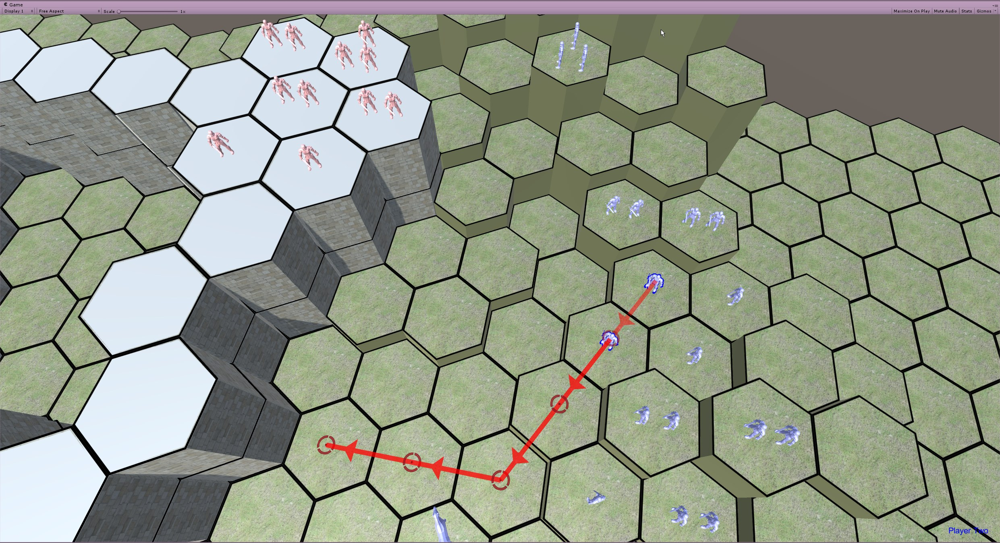

I'm a software engineeer currently living in Seattle, Washington and working for Microsoft. I graduated from Georgia Institute of Technology in 2016 with a degree in Computer Science. Most of my work experience is software development, but I have worked on all sorts of hobbies and side-projects in my spare time, including...
Or look at my github! Or my bitbucket!
My work experience:
More info can be found on my resume.
Here is a quick run-down of what languages I have worked frequently with:
Technologies that I am very comfortable with:
And a bunch of languages and technologies that I have used to varying degree, but haven't used too frequently or recently. The higher on this list, the more comfortable I am with it:
For a better picture of my skill-set check out my resume.
Still reading? Well, here are some random things about me that may or may not be of interest:
A selection of some of my favorite and personal and school projects that I have worked on, with links to source code included. Click a project to expand.
Real-time/turn-based hybrid? What??? That's the cool thing about this game. Both players issue orders during a timed "command" phase. Once the time is up, a turn elapses, issuing all orders for both players simultaneously. Because the moves execute simultaneously, if you can anticipate what your oppenent is going to do then you can gain a big advantage. This game is still very much a work in progress, and I am trying to work on it daily in the time I can find after my day-job.
A very basic prototype that I wrote entirely from scratch using C++, OpenGL, and GLFW. It was mostly written as an excercise to become more familiar with game engine programming. This prototype includes (and taught me a lot about):
While implementing EPA, I created some visual tools in-engine to help me debug. When finished, I realized how invaluable the tools were and how much they helped me understand the ins and outs of the algorithm. I decided to make a youtube video explaining EPA using the visual tools. A few years later it has several thousand views and is one of the top results when you Google "Expanding Polytope Algorithm"... pretty sweet!
In this puzzle game prototype, you cooperate with previous iterations of yourself to make it to the end of each level. Take a leap of faith with one life, and use the next life to catch yourself mid-air and throw yourself up to a higher platform. The concept was inspired by the time travel mechanics in the games Braid and The Talos Principle.
A personal project that I wrote to run on a raspberry pi. This Python program fetches data about any MLB baseball game on any date, including live games. It also retrieves local weather data and division standings, and displays them to a connected screen.

Cryptocurrency is still an extremely young market. It also has hundreds of trading pairs across a handful of exchanges. Small price gaps often temporarily arise between two exchanges. These gaps can last anywhere from a minute to a few hours until enough arbitrage bots swoop in to take some gains and close the gap. Welp, I decided to write one of those bots. It monitors a huge number of trading pairs and considers market price, volume, trade fees, withdraw fees, and the current order books to determine whether an arbitrage situation has arisen. It then checks my accounts to see if I have sufficient funds to take advantage of it, and alerts me if I do, telling me exactly how much to buy/sell on each market and what profit I can expect to make. I also programmed it with the ability to automatically make trades on my behalf and redistribute my crypto across my wallets. I decided not to ever live test this functionality though, as this was mostly just a project for fun... and with the nature of cryptocurrency I could have easily lost many or all of my coins if the code had a bug.
This was an extremely fun project to work on, and it actually has made me a decent bit of money (via alerting me of opportunities which I then manually traded on). However, there is no free lunch. The arbitrage gaps are often few and far between, and the only way to take advantage of them for a lot of money is to have a significant bankroll of cryptocurrency spread across multiple exchanges. I did consider trying to make some real money with this program, but decided that the risk and volatility was simply too big for the upfront investment that it would have required.
CSub is a standalone subtitle player that I wrote as a personal project my Sophomore year of college. It was written as a Java GUI, using the Swing library. It is ideal for watching videos online that do not support subtitles. Simply download the .srt file for the video you are watching from a place like subscene, load the .srt into CSub and sync the player up with the video. This was one of the first big projects that I completed as a programmer. While the code quality leaves a lot to be desired, the program itself is functional and easy-to-use.
In my compilers class, we were given a specification for an extremely simple programming language called "Tiger." Throughout the course of the semester, we wrote a full compiler in Java to compile Tiger source code to MIPS assembly. This is the largest project that I have written single-handedly. It uses a table-driven scanner and parser to construct a parse-tree, then passes over the tree to perform semantic checks and output IR, and then uses naive register allocation to translate the IR into MIPS assembly. There are likely some bugs in it, not all of the design decisions were the best, and it doesn't support recursive function calls... but it is a working compiler!
A library written in C++ that allows an mbed LPC1768 microcontroller to use a Nintendo 64 controller as an input device. I wrote the C++ code that runs on the mbed itself, while my project partner wrote the code to interface between the PC and the mbed and display the buttons that are pressed.
A 3D ray tracer written in Java using Processing. Scenes were read in from .cli files using a format specified by the assignment description, and rendered via ray tracing. The ray tracer can render triangles and spheres, and supports shadows, reflections, and diffuse, ambient, and specular lighting.
An info-visualization of a huge data set of UFC fights and fighters. Fighters are represented as nodes, and matches between two fighters as an edge between the corresponding nodes. Thicker edges mean a larger match history. Larger nodes means a more winning fighter. Click on the individual nodes to drill down into the data.Check it out.
My digital design lab required us to evaluate the time, memory, and accuracy tradeoffs between various assembly-level implementations of arctan running on hardware that was extremely memory-limited. I think that my report is a great example my ability to evaluate tradeoffs and communicate them effectively.
Entity Relationship Diagram and Relational Schema Design that I designed to fit the specifications of a library database system.